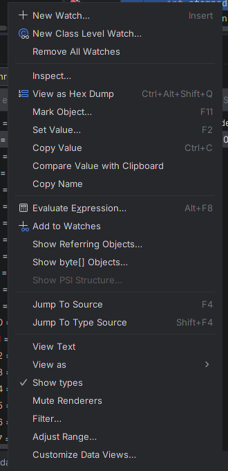
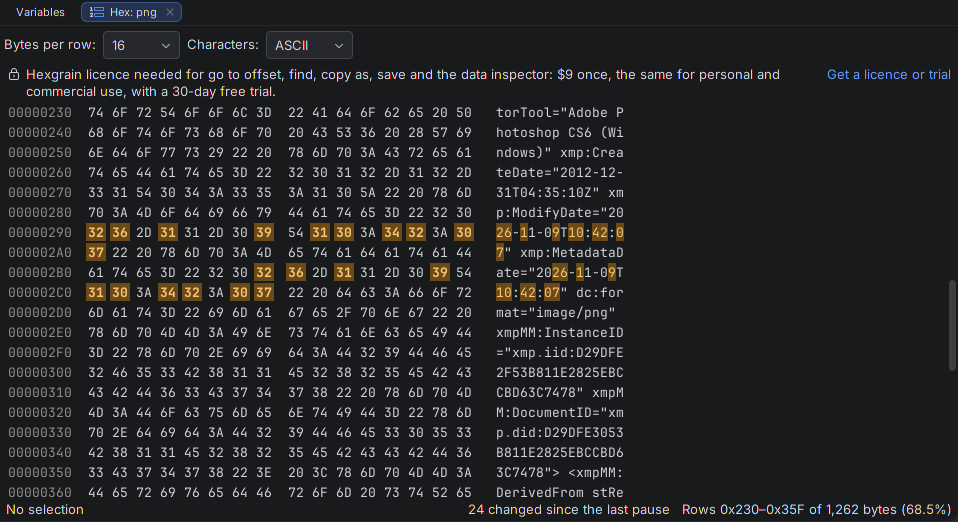
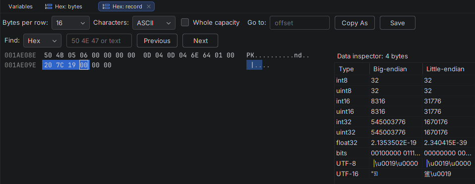
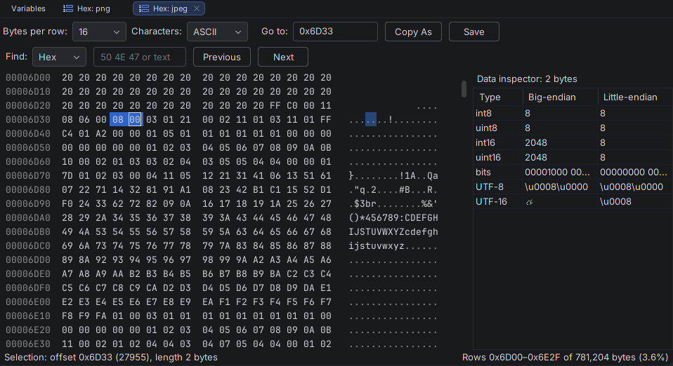

Hexgrain quick start
Installing Hexgrain, your first Hex tab, and what the licence adds. Back to the Hexgrain product page.
Install (IntelliJ IDEA 2025.3 or later)
- Download
hexgrain-1.0.3.zip. Do not unzip it. - In IntelliJ IDEA, open Settings | Plugins, click ⚙, choose Install Plugin from Disk…, pick the zip, and accept the IDE's third-party plugin notice.
- Click Restart IDE. The IDE asks for one restart when it installs a paid or freemium plugin from disk; then Hexgrain is ready. What's New on the plugin's page lists this version's changes.
Once the JetBrains Marketplace listing is live (it is in review), you can also install from Settings | Plugins | Marketplace by searching for Hexgrain, and updates arrive through the IDE.
Hexgrain works with Java and Kotlin programs debugged in IntelliJ IDEA. Tested in IntelliJ IDEA 2025.3 on Linux and checked against 2026.3 with JetBrains' Plugin Verifier; Windows and macOS are not tested yet. Rider will not install it in this version. Other JetBrains IDEs can install it, but have nothing for it to show.
Open a Hex tab
- Start your program with Debug and pause at a breakpoint where a
byte[]is in scope. - In Variables, right-click the array and choose View as Hex Dump, or select it and press Ctrl+Alt+Shift+Q. The same item is in the context menu of Watches and of an Evaluate Expression result, and in Find Action (Ctrl+Shift+A, type "hex dump").
- A Hex tab opens in the Debug tool window, titled with the expression: an offset column, the bytes in hex, and the characters.

byte[].Read the dump
- Bytes per row: 8, 16 or 32. Characters: ASCII, Latin-1 or UTF-8. Non-printable bytes show as a dot; in UTF-8 a character shows at its first byte. Changing these in a tab changes that tab only.
- Select by dragging in the hex columns or in the characters; the selection shows in both, with its offset and length below. Ctrl+C (or right-click Copy as Hex) copies it as
89 50 4E 47. - Step Over, or any pause: the tab reads the array again and marks the bytes that changed since the last pause. Arrays up to 1 MiB (1,048,576 elements) are read whole at every pause, so a change anywhere in them is marked; in larger arrays, changes are marked in the rows read at both pauses.
- The tab follows the array it was opened on. When a called method has its own variable of the same name, the tab keeps showing your array, read at this pause, and says so. When your variable is given a new array, the tab shows the new one, marks nothing, and says so. When the variable is not in the selected frame any more, the tab says so and keeps the last bytes, greyed.
- After Resume, the tab shows the bytes from the last pause, greyed, and reads nothing from the running program.
- Null and empty arrays show a one-line message. Without a licence, arrays over 64 KB show their first 64 KB (65,536 bytes) and one line with the array's length and what a licence adds.

With a licence
- Any size. Arrays beyond 64 KB open whole. The tab reads only the rows on screen plus 64 rows above and below. The status line shows which rows are on screen and how far into the array they are. A read that fails, or takes longer than the limit in Settings (10 s by default), shows its reason in the tab; the IDE stays responsive.
- Go to takes an offset in hex (
0x1F000000, or zero-padded as in the offset column,00013790) or decimal (520093696). A plain number is read as decimal, and the tab says which offset that is. - Find: choose Hex (
49 44 41 54, spaces anywhere) or Text (ASCII or UTF-8), then Next or Previous. The whole array is searched; arrays up to 1 Mi elements show "Match 2 of 5". Stop, or Escape in the Find field, ends a search. - Copy As: hex string, Base64, or a Java, Kotlin or C# array literal.
- Save: the selection or the whole array to a
.binfile through the IDE's save dialog; the tab shows the number of bytes written. Every byte comes from the same pause. The file is written next to the target and moved into place at the end, so a failed or stopped save leaves an existing file as it was. - Data inspector: select 1 to 8 bytes to see int8, int16, int32 and int64, signed and unsigned, float32 and float64, big- and little-endian, and the bits; any selection also shows its UTF-8 and UTF-16 text. Right-click a value or press Ctrl+C to copy it.
- More types:
java.nio.ByteBuffer(heap and direct; the bytes between position and limit, with Whole capacity to see all of it),short[],int[],long[]andchar[], one element per cell at its own width, with 4, 8, 16 or 32 columns. Without a licence, such a value opens a tab whose one locked line sits at the top.

ByteBuffer in Kotlin: the 22 bytes between position and limit, at the file's own offsets.
Licence and trial
Licences and the trial are sold and started by JetBrains Marketplace, so they start when the Hexgrain listing is live; it is in review. Until then the free tier works in full, and in the 1.0.3 download Get a licence or trial says so in the line instead of opening a licence dialog where no trial can start yet.
Once the listing is live, each licensed control shows one line with the price and Get a licence or trial, which opens the IDE's own licence dialog with Hexgrain selected, only when you click it. The trial is 30 days of every feature. The licence is a JetBrains Marketplace perpetual licence: $9 once, the same for personal and commercial use, every update included, nothing renews. When a trial ends there is no pop-up, banner or notification, and the free hex dump keeps working.
Settings
Settings | Tools | Hexgrain: default bytes per row, columns for integer arrays, the characters column, the read time limit, your licence state, and a link to rate or review Hexgrain on JetBrains Marketplace.
Known limits
- The program must be paused. Hexgrain never changes the values in your program. To read a direct
ByteBuffer, which has no Java array behind it, it copies the requested bytes into a new array in the program's heap; the buffer itself is untouched. Arrays and heap buffers are read directly, with no program code run. - Re-reads at each pause follow variables, field chains (also through a cast) and array elements with a number. An expression with method calls is not run again: the tab keeps the array it first showed and says so.
- While a Save of an array or heap buffer runs, Resume and Step wait until it is done (about 5 seconds per 128 MiB).
- Find through a very large array is slow: 38 to 53 seconds for a whole 1 GiB array with no match in our runs.
- Not covered: Rider and C#, Python, Go, JavaScript and TypeScript debuggers; C, C++ and Rust (use the IDE's Memory View); raw memory at an address; Remote Development and Code With Me clients; Android Studio. Arrays larger than 1 GiB have not been measured.
Privacy
Hexgrain reads values of the program you are debugging only when you open a Hex tab, keeps them in memory, and writes them to disk only when you choose Save. It makes no network calls and collects and sends nothing. The licence check is done by the IDE through JetBrains Marketplace licensing. See also the privacy policy.
Source code
The plugin's source code ships inside the plugin zip, as hexgrain/src/hexgrain-1.0.3-sources.zip, under the licence agreement; the same agreement is the LICENSE file in the zip.
Support
Email support@ochrestack.com with the IDE version (Help > About), the array's type and length, and what the tab showed. Bug reports and feature requests are welcome at the same address.